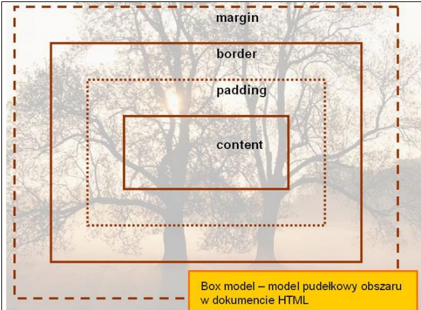
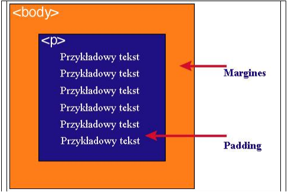

1. Podaj definicję modelu pudełkowego.
Model pudełkowy w HTML określa sposób, w jaki przeglądarki renderują elementy jako prostokątne pudełka składające się z zawartości (content), wypełnienia (padding), obramowania (border) i marginesu (margin).
2. Tabela zawartości modelu pudełkowego
| Zawartość |
Opis |
| Content |
Zawartość elementu, np. tekst lub obrazek. |
| Padding |
Odstęp między zawartością a obramowaniem. |
| Border |
Obramowanie wokół zawartości elementu. |
| Margin |
Margines zewnętrzny oddzielający element od innych. |
3. Dwie uwagi na temat modelu pudełkowego
Uwaga 1: Padding, border i margin mogą mieć zerową wartość.
Uwaga 2: Tło elementu obejmuje content, padding i border, ale nie margin.
4. Grafika przedstawiająca model pudełkowy

5. Grafika przedstawiająca różnicę między paddingiem a marginesem

Padding określa przestrzeń wokół danego elementu, np: < p> lub < div>, natomiast margines
przestrzeń pomiędzy elementami.
Jak widać na rysunku, padding oznaczony jest kolorem niebieskim. Określa on wielkość
przestrzeni wokół elementu < p>. Element ten posiada również margines zaznaczony kolorem
pomarańczowym. Jest to odległość od brzegu elementu < body>.